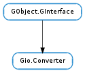

| Subclasses: | Evd.HttpChunkedDecoder, Gio.CharsetConverter, Gio.ZlibCompressor, Gio.ZlibDecompressor |
|---|
None
None
Bases: GObject.GInterface
Gio.Converter is implemented by objects that convert binary data in various ways. The conversion can be stateful and may fail at any place.
Some example conversions are: character set conversion, compression, decompression and regular expression replace.
| Parameters: |
|
|---|---|
| Raises: | |
| Returns: | a Gio.ConverterResult, Gio.ConverterResult.ERROR on error. |
| Return type: | Gio.ConverterResult, bytes_read: int, bytes_written: int |
This is the main operation used when converting data. It is to be called multiple times in a loop, and each time it will do some work, i.e. producing some output (in outbuf ) or consuming some input (from inbuf ) or both. If its not possible to do any work an error is returned.
Note that a single call may not consume all input (or any input at all). Also a call may produce output even if given no input, due to state stored in the converter producing output.
If any data was either produced or consumed, and then an error happens, then only the successful conversion is reported and the error is returned on the next call.
A full conversion loop involves calling this method repeatedly, each time giving it new input and space output space. When there is no more input data after the data in inbuf, the flag Gio.ConverterFlags.INPUT_AT_END must be set. The loop will be (unless some error happens) returning Gio.ConverterResult.CONVERTED each time until all data is consumed and all output is produced, then Gio.ConverterResult.FINISHED is returned instead. Note, that Gio.ConverterResult.FINISHED may be returned even if Gio.ConverterFlags.INPUT_AT_END is not set, for instance in a decompression converter where the end of data is detectable from the data (and there might even be other data after the end of the compressed data).
When some data has successfully been converted bytes_read and is set to the number of bytes read from inbuf, and bytes_written is set to indicate how many bytes was written to outbuf. If there are more data to output or consume (i.e. unless the Gio.ConverterFlags.INPUT_AT_END is specified) then Gio.ConverterResult.CONVERTED is returned, and if no more data is to be output then Gio.ConverterResult.FINISHED is returned.
On error Gio.ConverterResult.ERROR is returned and error is set accordingly. Some errors need special handling:
Gio.IOErrorEnum.NO_SPACE is returned if there is not enough space to write the resulting converted data, the application should call the function again with a larger outbuf to continue.
Gio.IOErrorEnum.PARTIAL_INPUT is returned if there is not enough input to fully determine what the conversion should produce, and the Gio.ConverterFlags.INPUT_AT_END flag is not set. This happens for example with an incomplete multibyte sequence when converting text, or when a regexp matches up to the end of the input (and may match further input). It may also happen when inbuf_size is zero and there is no more data to produce.
When this happens the application should read more input and then call the function again. If further input shows that there is no more data call the function again with the same data but with the Gio.ConverterFlags.INPUT_AT_END flag set. This may cause the conversion to finish as e.g. in the regexp match case (or, to fail again with Gio.IOErrorEnum.PARTIAL_INPUT in e.g. a charset conversion where the input is actually partial).
After Gio.Converter.convert () has returned Gio.ConverterResult.FINISHED the converter object is in an invalid state where its not allowed to call Gio.Converter.convert () anymore. At this time you can only free the object or call Gio.Converter.reset () to reset it to the initial state.
If the flag Gio.ConverterFlags.FLUSH is set then conversion is modified to try to write out all internal state to the output. The application has to call the function multiple times with the flag set, and when the available input has been consumed and all internal state has been produced then Gio.ConverterResult.FLUSHED (or Gio.ConverterResult.FINISHED if really at the end) is returned instead of Gio.ConverterResult.CONVERTED. This is somewhat similar to what happens at the end of the input stream, but done in the middle of the data.
This has different meanings for different conversions. For instance in a compression converter it would mean that we flush all the compression state into output such that if you uncompress the compressed data you get back all the input data. Doing this may make the final file larger due to padding though. Another example is a regexp conversion, where if you at the end of the flushed data have a match, but there is also a potential longer match. In the non-flushed case we would ask for more input, but when flushing we treat this as the end of input and do the match.
Flushing is not always possible (like if a charset converter flushes at a partial multibyte sequence). Converters are supposed to try to produce as much output as possible and then return an error (typically Gio.IOErrorEnum.PARTIAL_INPUT ).
Resets all internal state in the converter, making it behave as if it was just created. If the converter has any internal state that would produce output then that output is lost.